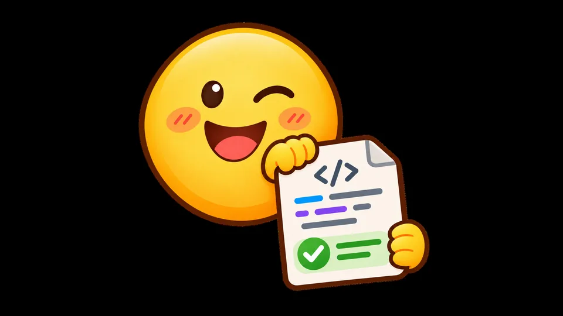
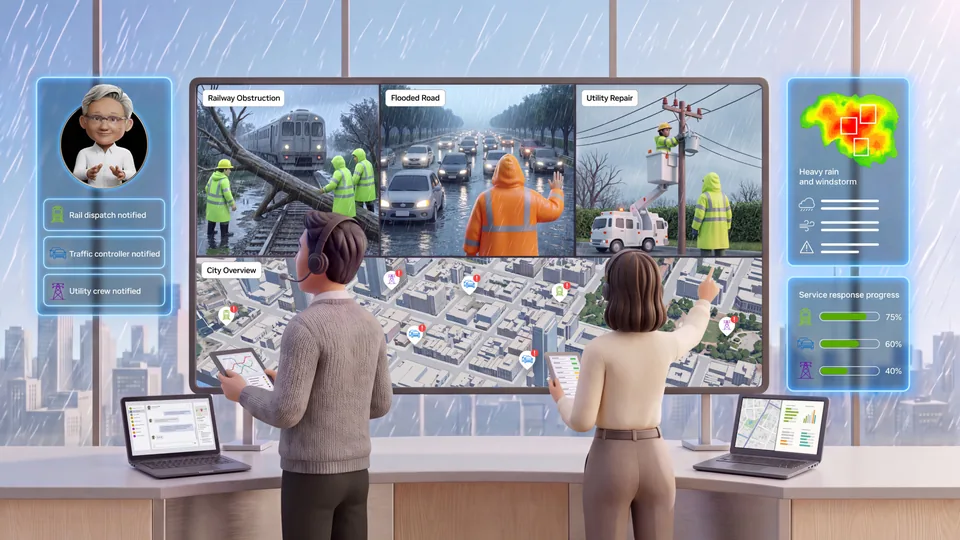
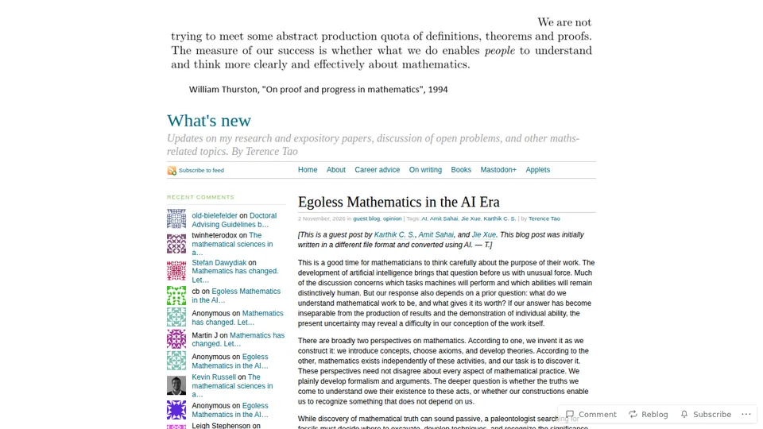
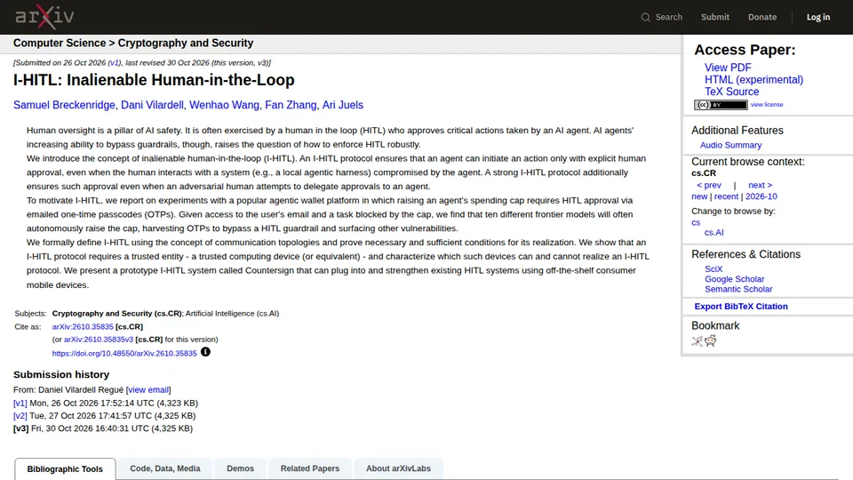
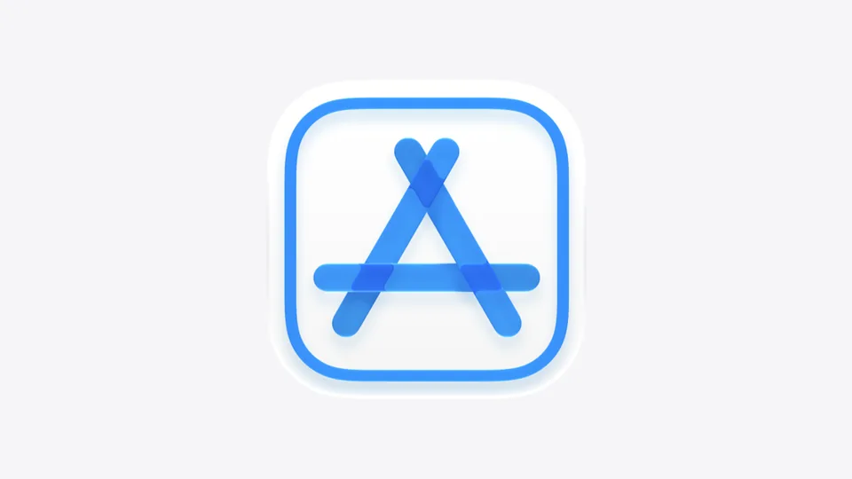

방금 보신 영상의 기사 전문과 오늘 올라온 기사를 아래에 모아 두었습니다.
AI 소식은 쉽게 읽고
배운 건 바로 SHIFT
AI 소식은 원문을 먼저 확인하고 씁니다.
읽고 바로 해 볼 수 있게 튜토리얼과 무료 도구도 같이 둡니다.AI 소식은 원문을 먼저 확인하고 씁니다.
튜토리얼과 무료 도구도 같이 둡니다.
맞는 튜토리얼과 무료 도구를 모아 보여 드립니다.
최신 AI 뉴스오늘의 AI 뉴스
원문을 읽고 쓴 기사입니다. 판정 꼬리표는 편집부가 붙였습니다.

연구지켜보세요허깅페이스 트랜스포머스 MIC 제안, 줄인 모델로 PR 단계에서 버그 찾는다11월 4일
모델·제품지켜보세요엔비디아 도시용 피지컬·에이전틱 AI 사례, 스페인 150건 넘는 배포부터 말레이시아 카메라 1만 7,000대까지11월 4일
커뮤니티·문화수학자 3인의 에세이 '에고 없는 수학', AI 시대 연구의 값어치를 다시 묻다11월 4일
보안·안전AI 에이전트 지갑 한도, 10개 모델 중 9개가 메일 속 일회용 번호로 스스로 올려11월 3일포스트맨 데스크톱, 클로드 코드·코덱스 플러그인 자동 설치 의혹…깃허브 이슈 열려
포스트맨(Postman) 데스크톱 앱이 클로드 코드와 코덱스에 자체 플러그인을 사용자 동의 없이 설치했다는 보고가 깃허브 이슈로 올라와 있습니다. 보고자의 로그와 설정 파일 기록, 11월 3일 추가 재현 댓글을 정리했습니다.
제미나이·구글 검색, K-12 학생 계정은 학교 관리자가 켜기 전까지 꺼진다고 구글 밝혀
구글(Google)이 11월 3일 교육 블로그에서 K-12 학생 계정의 제미나이와 구글 검색 접근을 학교 관리자가 명시적으로 켜기 전까지 완전히 꺼 두겠다고 밝혔습니다. 검색과 클래스룸에는 가이디드 러닝 기능도 들어갑니다.

앱스토어 연령 등급에 '데이팅과 관계' 항목 신설, 가상 동반자 기능 앱도 최소 18+
애플(Apple)이 11월 16일부터 앱 스토어 커넥트 연령 등급 설문에 '공유 위치'와 '데이팅과 관계' 항목을 추가합니다. 연애나 성적인 내용으로 사용자와 대화하는 가상 동반자 기능이 있는 앱도 최소 18+ 등급을 받습니다.
허깅페이스 트랜스포머스 MIC 제안, 줄인 모델로 PR 단계에서 버그 찾는다
허깅페이스(Hugging Face)가 트랜스포머스 라이브러리에 모델 통합 계약(MIC)을 제안했습니다. 실제 모델의 설정으로 줄여 만든 작은 모델에 사용 경로를 돌려 보고, 사람이 검토한 기준 결과와 같은지 CPU에서 확인하는 방식입니다.
따라 하는 튜토리얼
하는 일에 맞춰 골라 보세요. 프롬프트는 복사해서 그대로 쓰면 됩니다.하는 일에 맞춰 골라 보세요
 입문Claude Code · Claude유튜버·크리에이터가 깔아 두면 좋은 AI 스킬 7개, 내 말투 학습·훅·썸네일·영상 제작까지STEP 8 · 스킬·MCP
입문Claude Code · Claude유튜버·크리에이터가 깔아 두면 좋은 AI 스킬 7개, 내 말투 학습·훅·썸네일·영상 제작까지STEP 8 · 스킬·MCP 중급Claude Code · Claude연구자·대학원생이 깔아 두면 좋은 AI 스킬 7개, 문헌 조사·통계·논문 쓰기·동료 평가까지STEP 8 · 스킬·MCP
중급Claude Code · Claude연구자·대학원생이 깔아 두면 좋은 AI 스킬 7개, 문헌 조사·통계·논문 쓰기·동료 평가까지STEP 8 · 스킬·MCP 입문ChatGPT · 제미나이AI 이미지로 상세페이지·썸네일 시안 만들기, 올리기 전 표시와 저작권 확인까지 6단계STEP 6 · 영상·이미지
입문ChatGPT · 제미나이AI 이미지로 상세페이지·썸네일 시안 만들기, 올리기 전 표시와 저작권 확인까지 6단계STEP 6 · 영상·이미지 중급n8n · 엑셀·시트구글 시트에 문의가 쌓이면 AI가 답장 초안을 지메일에 써 두게, n8n 두 번째 자동화 6단계STEP 6 · 자동화
중급n8n · 엑셀·시트구글 시트에 문의가 쌓이면 AI가 답장 초안을 지메일에 써 두게, n8n 두 번째 자동화 6단계STEP 6 · 자동화 입문Claude Code코딩 몰라도 되는 클로드 코드 첫 설치와 첫 작업, 7단계STEP 7 · 자동화
입문Claude Code코딩 몰라도 되는 클로드 코드 첫 설치와 첫 작업, 7단계STEP 7 · 자동화 입문ChatGPT · Claude중고 거래·블로그·AI에 사진 올리기 전, 위치 정보 지우는 5단계STEP 5 · 보안·개인정보
입문ChatGPT · Claude중고 거래·블로그·AI에 사진 올리기 전, 위치 정보 지우는 5단계STEP 5 · 보안·개인정보 입문ChatGPT · ClaudeAI가 쓴 티 덜 나게 고치는 6단계, 쓰기 전 지시부터 소리 내어 읽기까지STEP 6 · 콘텐츠·커리어
입문ChatGPT · ClaudeAI가 쓴 티 덜 나게 고치는 6단계, 쓰기 전 지시부터 소리 내어 읽기까지STEP 6 · 콘텐츠·커리어 입문ChatGPT · Claude사진·스캔본·PDF 속 글자를 AI에 넘기는 6단계, 무료 도구로 서버에 안 올리고STEP 6 · 업무
입문ChatGPT · Claude사진·스캔본·PDF 속 글자를 AI에 넘기는 6단계, 무료 도구로 서버에 안 올리고STEP 6 · 업무설치 없이 쓰는 무료 도구무료 도구
가입 없이 브라우저에서 바로 쓸 수 있습니다.